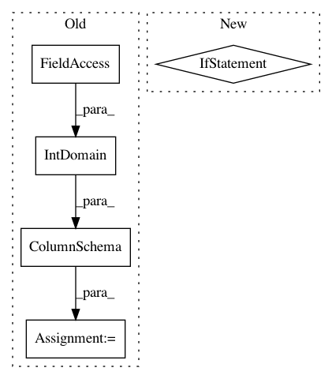

687e31d276db17b4ac7bea08b01c1e5401168ca9,tensorflow_transform/schema_inference.py,,infer_feature_schema,#Any#Any#Any#,32
Before Change
min_value, max_value = session.run(override_min_and_max)
else:
min_value, max_value = None, None
column_schemas[name] = dataset_schema.ColumnSchema(
dataset_schema.IntDomain(tf.int64, min_value, max_value,
is_categorical=True),
column_schema.axes,
column_schema.representation)
else:
column_schemas[name] = column_schema
return dataset_schema.Schema(column_schemas)
After Change
domains = {}
for name, tensor in six.iteritems(features):
values = tensor.values if isinstance(tensor, tf.SparseTensor) else tensor
if values in tensor_ranges:
assert values.dtype == tf.int64
min_value, max_value = tensor_ranges[values]
domains[name] = schema_pb2.IntDomain(
min=min_value, max=max_value, is_categorical=True)
feature_spec = _feature_spec_from_batched_tensors(features)
return dataset_schema.from_feature_spec(feature_spec, domains)
In pattern: SUPERPATTERN
Frequency: 3
Non-data size: 5
Instances
Project Name: tensorflow/transform
Commit Name: 687e31d276db17b4ac7bea08b01c1e5401168ca9
Time: 2019-01-23
Author: tf-transform-dev@google.com
File Name: tensorflow_transform/schema_inference.py
Class Name:
Method Name: infer_feature_schema
Project Name: tensorflow/transform
Commit Name: 08c0e994cc0e20cb576469c01b472a43e3279e86
Time: 2019-02-25
Author: tf-transform-dev@google.com
File Name: tensorflow_transform/beam/tft_beam_io/beam_metadata_io_test.py
Class Name:
Method Name:
Project Name: tensorflow/transform
Commit Name: 08c0e994cc0e20cb576469c01b472a43e3279e86
Time: 2019-02-25
Author: tf-transform-dev@google.com
File Name: tensorflow_transform/beam/tft_beam_io/transform_fn_io_test.py
Class Name:
Method Name: